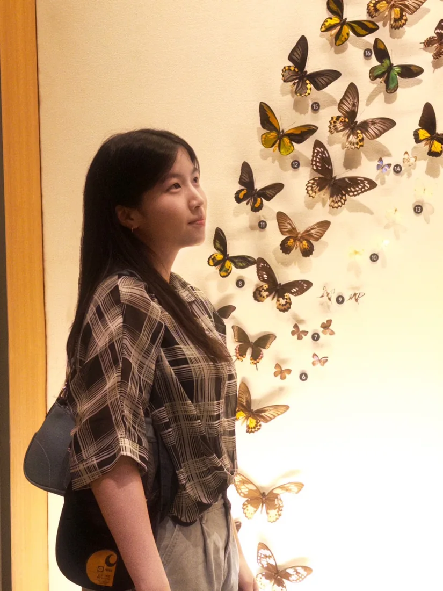
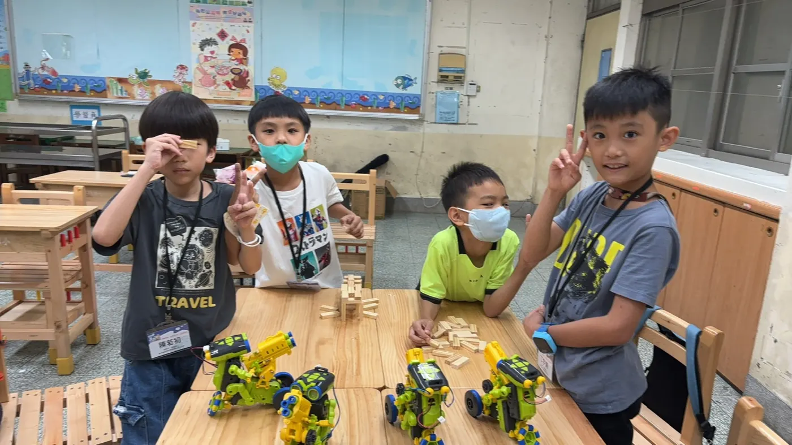
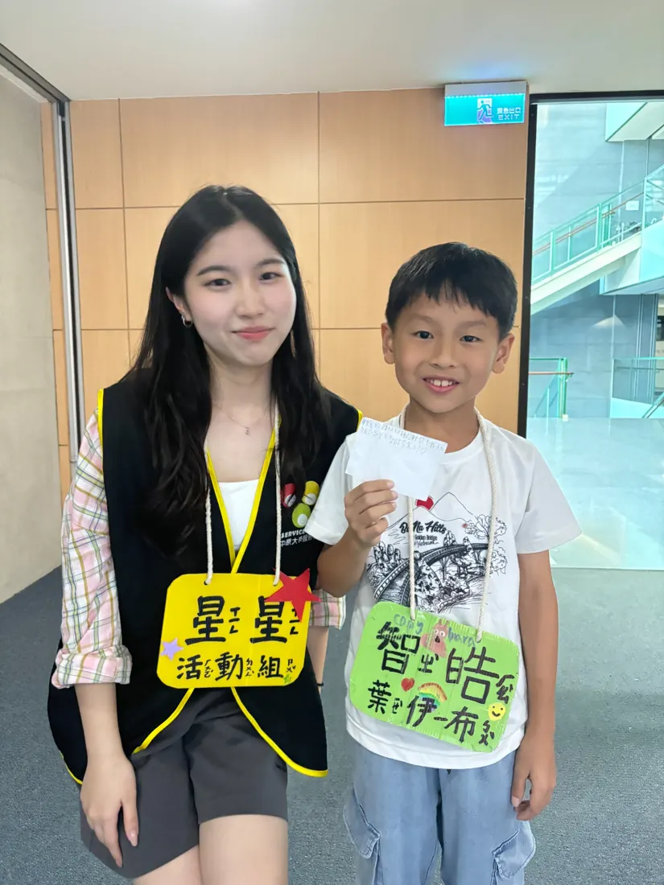
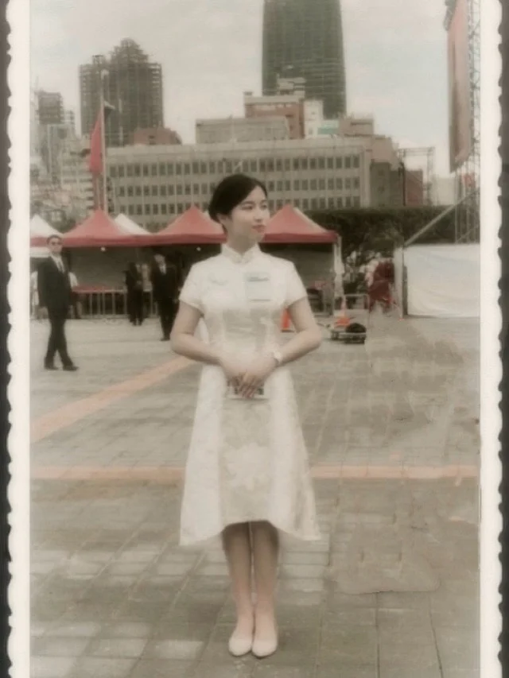
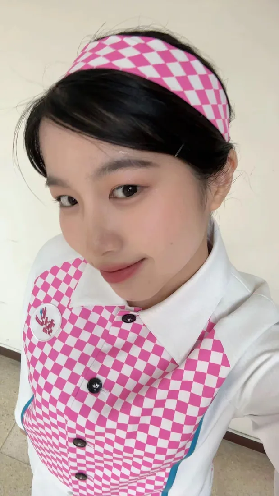
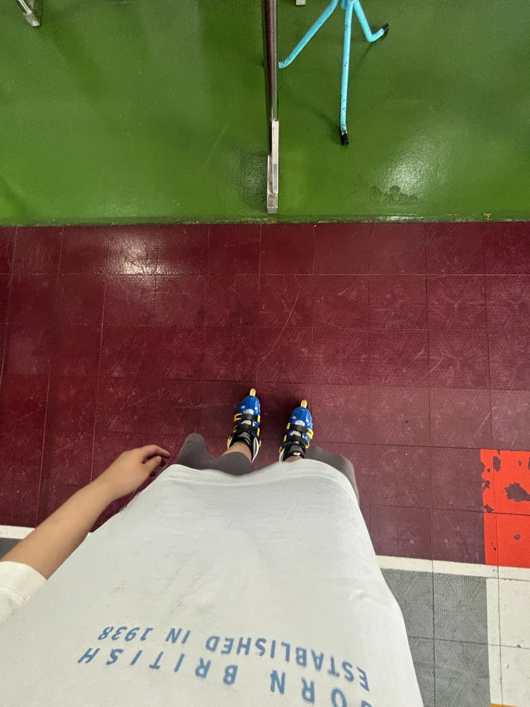
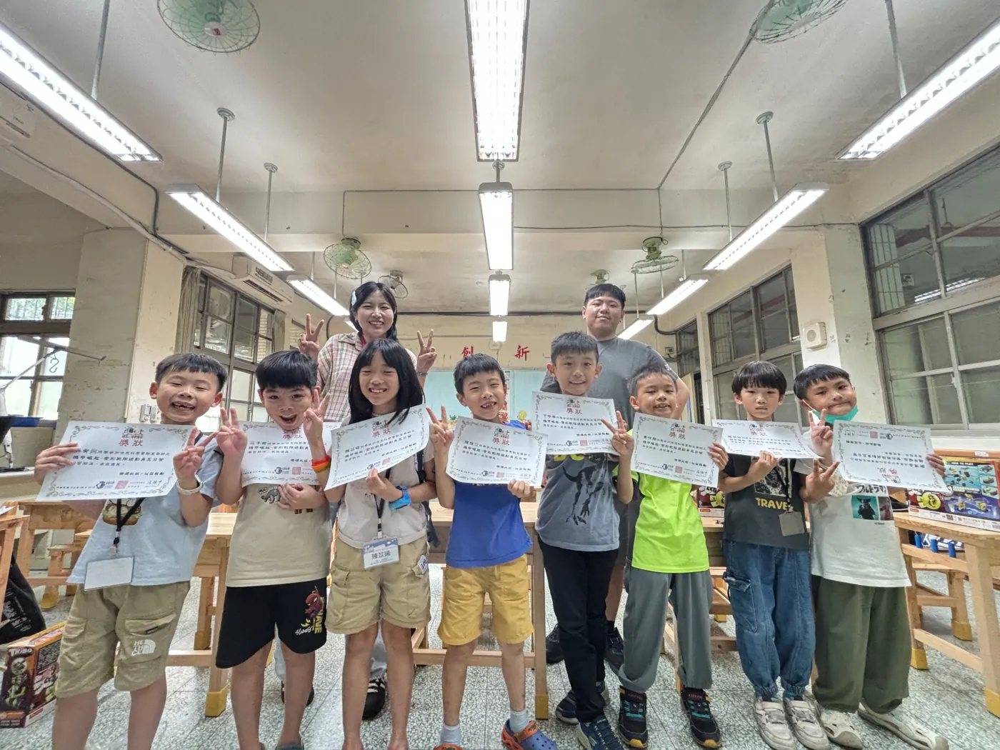
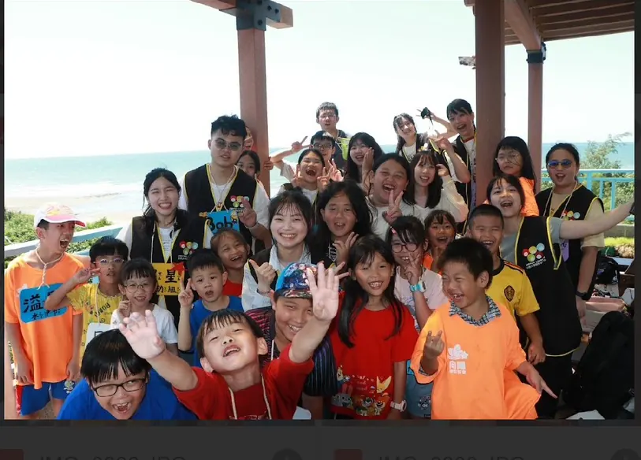
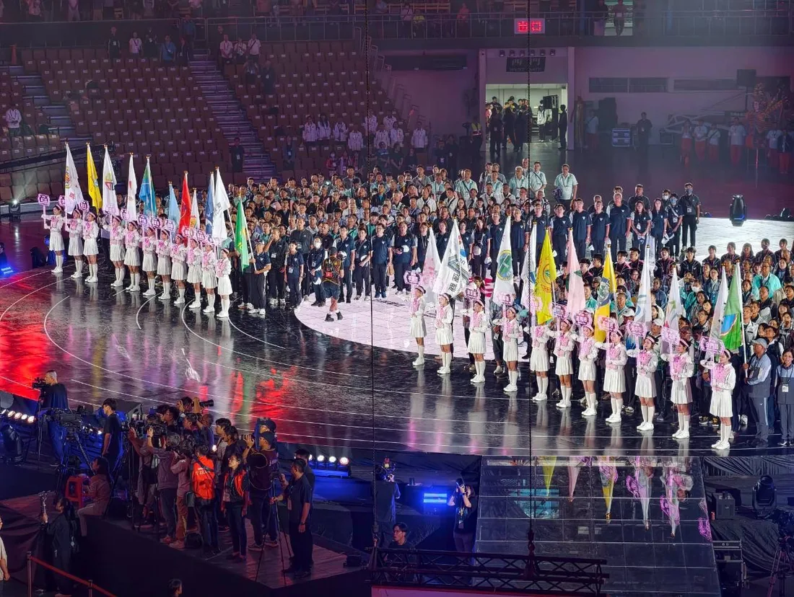
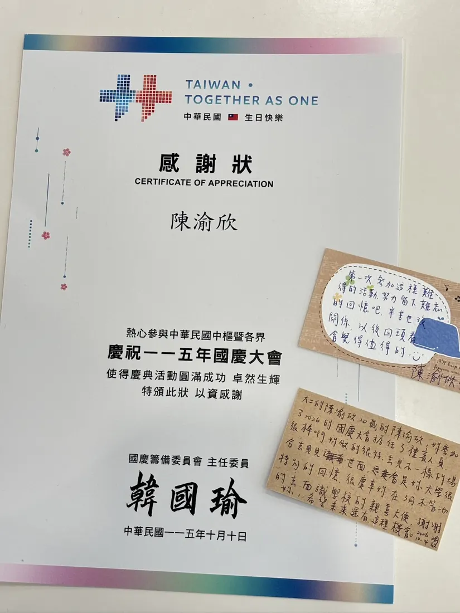

✦ A LITTLE ABOUT ME
熱情、細心，
也喜歡勇敢試試看。
我是來自基隆、目前就讀中原大學資訊管理學系的陳渝欣。個性外向、喜歡認識新朋友，也很享受與團隊一起完成任務的過程。我喜歡小提琴、運動與接觸不同的人事物，總能從新的體驗中找到成就感。
我的優點是樂於溝通、願意幫忙，也會努力照顧團隊的感受；有時候比較心急，遇到陌生環境也需要一點時間適應，所以我正練習更有耐心地安排事情、一步一步把想法做好。

不只是履歷上的幾行字，更是一路累積的故事。
我是來自基隆、目前就讀中原大學資訊管理學系的陳渝欣。個性外向、喜歡認識新朋友，也很享受與團隊一起完成任務的過程。我喜歡小提琴、運動與接觸不同的人事物，總能從新的體驗中找到成就感。
我的優點是樂於溝通、願意幫忙，也會努力照顧團隊的感受；有時候比較心急，遇到陌生環境也需要一點時間適應，所以我正練習更有耐心地安排事情、一步一步把想法做好。
不只有程式，也有生活中持續累積的能力。
* 百分比為個人自我評估，並非正式測驗成績。
每一次參與，都讓我多認識自己一點。

把科學知識變成孩子看得見、玩得到的實驗。
在機甲機器人課程中，我擔任帶領孩子學習的老師，將基礎科學原理融入機器人組裝與簡單實驗。從觀察零件、理解運作方式到完成挑戰，我會用生活化的說明引導孩子自己找答案，也依不同學習進度調整教學方式。這段經驗讓我練習把複雜的內容講得清楚，更學會耐心傾聽、鼓勵發問，以及陪伴孩子建立學習的自信。

設計一場活動，也練習真正站在孩子的角度思考。
參與服務學習時，我在活動組負責構思與準備適合孩子的互動遊戲，並在現場協助引導流程，陪伴弱勢孩童一起完成活動。從討論玩法、準備材料到實際帶領，我發現一個看似簡單的遊戲，也需要考慮每個孩子的參與感。這次服務讓我更懂得團隊合作、臨場應變，也學會用同理心照顧不同的需求。

從一次次練習，把從容與專注帶到正式場合。
身為學校國際親善大使的一員，我參與禮儀、儀態、接待與現場應對訓練，並有機會在國慶大典擔任禮賓人員。正式活動時必須維持專注，與夥伴配合現場動線及接待工作。這段經驗讓我了解大型典禮背後的細節與紀律，也練習在緊張的場合保持微笑、穩定表現，展現團隊的專業形象。

站上大型活動的現場，靠的是台下反覆準備。
我也曾參與全民運動會的舉牌引導工作。活動前需要熟悉流程、行進位置與團隊默契，正式上場時則要注意儀態、節奏及臨場指示。這類大型活動讓我更明白準備工作的重要，也學會在眾人面前保持自信與專注。能與不同背景的夥伴一起完成任務，是我很珍惜的經驗。

從站穩的第一步，陪伴孩子滑向自己的下一步。
我累積了兩年的直排輪教學經驗，從最基本的穿戴裝備、安全觀念與站姿平衡開始，陪伴孩子練習滑行、轉彎與煞車等動作。教學時，我會依照每個人的接受速度拆解練習步驟，並用鼓勵代替催促，讓害怕跌倒的孩子慢慢願意再試一次。這兩年不只磨練了我的表達能力與耐心，也讓我體會到教學最有成就感的時刻，是看見孩子從不敢嘗試到能夠自信向前。
以上經歷與以下活動照片、影片共同記錄機器人教學、兩年直排輪教學、志工服務、國慶禮賓與全民運動會。
用影像收藏那些努力過、也開心過的時刻。




一段值得珍藏的禮賓活動紀錄。